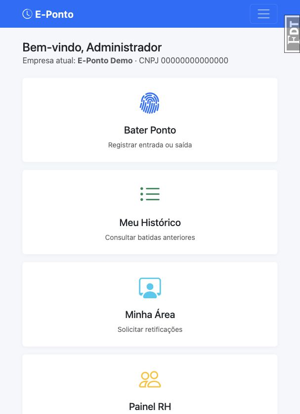
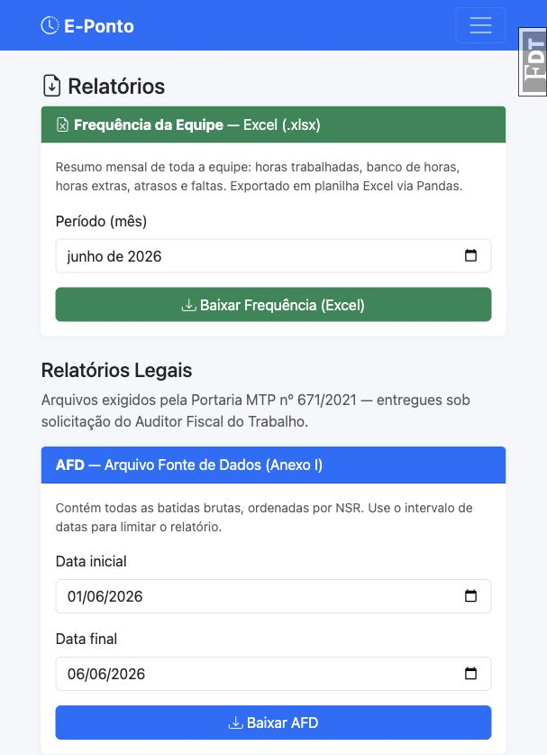
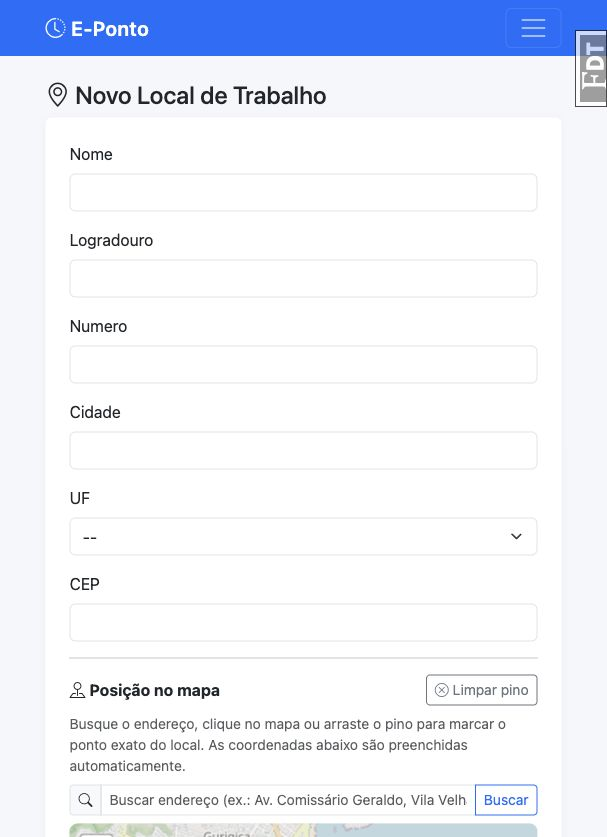
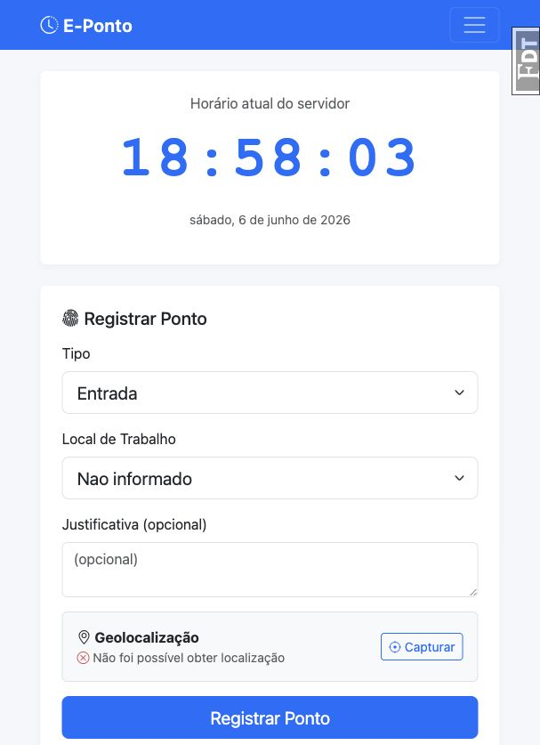

Programação Avançada para Web
E-Ponto: Sistema Web de Registro Eletrônico de Ponto
Uma aplicação Flask para registro de jornada, gestão de funcionários, relatórios trabalhistas e controles de segurança.
Problema
Controle de ponto precisa ser confiável, auditável e simples de usar
Empresas precisam registrar jornada, acompanhar faltas e atrasos, corrigir inconsistências e gerar relatórios sem perder integridade dos dados.
Necessidades atendidas
- Registrar entrada, almoço, retorno e saída final.
- Validar geolocalização sem bloquear indevidamente o trabalhador.
- Permitir retificação com justificativa e aprovação.
- Gerar relatórios para análise e auditoria.
Solução
Uma plataforma para funcionários, RH e administração
O E-Ponto organiza os fluxos principais em telas separadas por papel, reduzindo erro operacional e protegendo áreas sensíveis.

Funcionalidades
O sistema cobre o ciclo completo do ponto
Cadastro e configuração
Empresas, funcionários, RH, jornadas e locais de trabalho com geolocalização.
Registro diário
Quatro batidas por dia, IP de origem, timestamp e sinalização de localização suspeita.
Gestão pelo RH
Listagem de registros, aprovação de retificações e acompanhamento de banco de horas.
Dashboards
Indicadores de saldo, atrasos, faltas, horas trabalhadas e calendário mensal.
Relatórios
Exportação mensal por funcionário ou equipe, incluindo arquivos legais e Excel.
Autenticação
Login seguro com hash bcrypt, sessões, 2FA opcional e proteção de rotas.
Arquitetura
Estrutura simples, separada por responsabilidades
A aplicação usa Flask com Application Factory e Blueprints para organizar os módulos principais.
Backend
Flask, SQLAlchemy 2.x, Flask-Login, Flask-Migrate, Flask-WTF e Flask-Limiter.
Frontend
Templates Jinja2 com Bootstrap, mantendo telas responsivas e integradas ao backend.
Organização
Models, views, forms, extensões e utils ficam separados em pacotes próprios.
Testes
Suíte automatizada com pytest cobrindo autenticação, acesso, ponto, relatórios e segurança.
Modelo de dados resumido
User se relaciona com Role por meio de RoleUser. A empresa define o contexto ativo, e os registros de ponto ficam vinculados ao usuário e à empresa.
Segurança
Segurança foi tratada como requisito do sistema
Conformidade
O registro precisa preservar evidência e rastreabilidade
O sistema considera requisitos ligados à Portaria MTP 671/2021 e à auditoria de ponto.
- Registros armazenam data/hora, tipo de batida, usuário, empresa, IP e localização.
- NSR mantém sequência única por empresa.
- Cadeia de hashes SHA-256 detecta adulteração em registros.
- Retificações exigem justificativa e fluxo de aprovação.
- Relatórios legais AFD e AEJ apoiam a prestação de contas.

Demonstração prática
Roteiro sugerido para mostrar ao professor
1. Login automático
Entrar no sistema sem perder tempo digitando credenciais durante a apresentação.
2. Cadastro de local
Mostrar nome do local, latitude, longitude e raio de validação geográfica.
3. Registro de ponto
Demonstrar a tela de batida e explicar as quatro marcações do dia.
4. RH e relatórios
Mostrar consultas, relatórios e como o RH acompanha exceções e retificações.


Conclusão
O E-Ponto entrega uma solução funcional, segura e defensável
O projeto combina implementação web, regras de negócio trabalhistas, autenticação, autorização, testes e documentação de segurança.
- Resolve um problema real de controle de jornada.
- Separa responsabilidades entre funcionário, RH e administração.
- Inclui controles de segurança testados automaticamente.
- Permite demonstração prática com dados locais.
Fechamento sugerido
"O objetivo do E-Ponto foi transformar uma necessidade trabalhista em uma aplicação web completa, com foco em usabilidade, segurança e rastreabilidade dos registros."